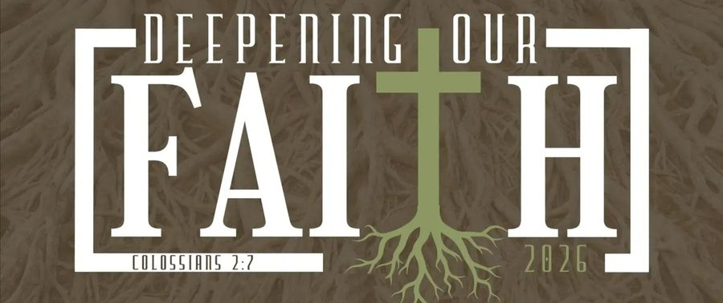
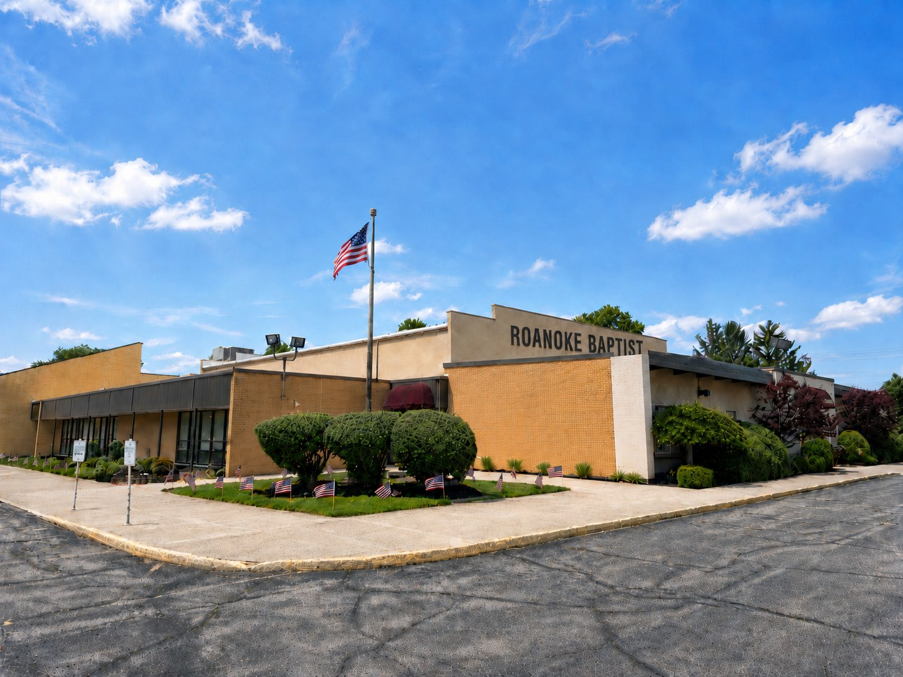

Roanoke, Indiana · Since 1968

We are the church that ministers. We guide people to the Saviour and to the Scripture. You are invited to worship with us this Sunday.
We Need To Return To Truth And Right
And to do it with love and grace.
Roanoke Baptist Church has ministered in Northeast Indiana since 1968. Our heart is simple: reach the lost with the gospel, grow believers in the Word of God, and send out disciples who make Him known.
We preach the Bible plainly, we sing with our whole hearts, and we welcome you just as you are. Whether you have been in church your whole life or are walking through the doors for the first time, there is a place for you and your family here.
What We Believe
Weekly Schedule & Events
Weekly Services
Sunday School
10:00 AM. Bible classes for every age, from the youngest children to adults.
Morning Worship
11:00 AM. Our main service, with congregational singing and Bible preaching.
Sunday Evening
6:00 PM. A warm evening service to close the Lord's Day together.
Wednesday Night
7:00 PM. Midweek Bible study and prayer, with Kids' Clubs for the children.
Regular Events
Wednesday Kids' Clubs
A fun, lively program that helps our kids get excited about living for the Lord.
Ladies' Missionary Fellowship
Monday evenings at 7:00 PM, gathering our ladies around the cause of missions.
Kids' Missionary Club
Once a month during Ladies' Fellowship, children learn about missionaries and their work.
Bus Ministry
Free transportation to Sunday morning service. Call the church to arrange a ride.
We'd Love To See You
What To Expect
-
Come As You AreNo need to dress up or have it all figured out. Just come, and you will be welcomed warmly.
-
Your Family Is WelcomeA clean, safe, loving nursery is staffed by trained volunteers, and there are classes for every age.
-
Bible Preaching & SingingExpect heartfelt congregational singing and clear, practical preaching from the Bible.
-
Need A Ride?Our bus ministry offers free transportation to Sunday morning service. Call us to set it up.
Contact & Location
-
Address11015 Lafayette Center Road
Roanoke, Indiana 46783 -
Phone(260) 478-5500
-
Get DirectionsOpen in Google Maps